MR-NAVQ95 hardware reference¶
Connectors and pinouts of the NXP MR-NAVQ95 vehicle computer (main board) and its expansion boards. All data comes from the public schematics in the MR-NAVQ95 repository: main board, IO board, camera board and T1 switch board. These are the Rev. A1 production boards.
Note: The boot-mode switch (SW2) is described under Boot Switch (SW2) below.
Each card shows three things per pin: the function, the net name in the schematic and the i.MX95 pad the signal ends up on. Parts in between, such as transceivers, level shifters and I/O expanders, are shown too. Pin 1 is the square pad.
Tip: The pinout cards are interactive: hover over a pin to highlight it, and click a pin to copy its net/pad name to the clipboard.
Board overview¶
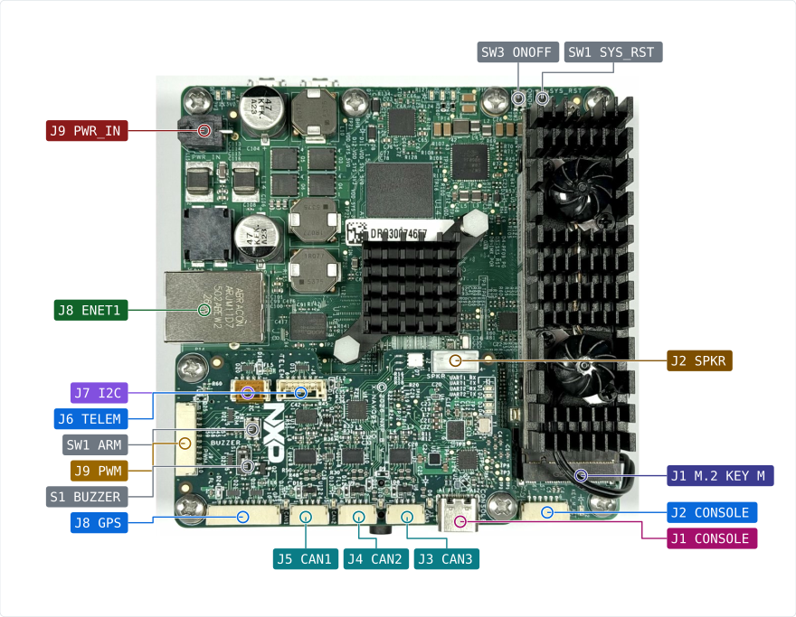
Not visible here:
J13 USB1 (bottom view)
J12 USB2 (bottom view)
J16 M.2 KEY B (bottom and front view)
J7 DEBUG (front view)
J6 MICROSD (front view)
J11 RTC_BAT (not visible in the photos)
SW2 BTMODE (top side, under the M.2 Key M module)
Front view. The JST-GH connectors of the IO board are on top. Below them, on the edge of the main board, are the debug header, the microSD slot, the SIM holder and the M.2 Key B slot:
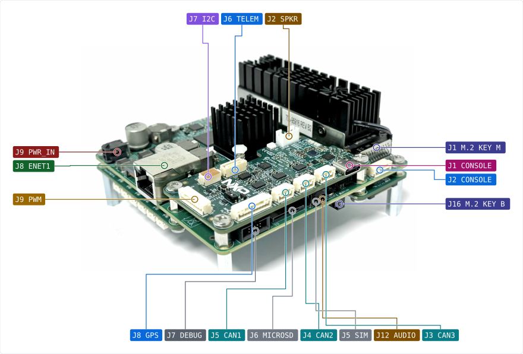
Bottom side. In the picture above the T1 Ethernet switch board and two camera boards are fitted. The left camera board is on the CSI_B2B port, the right one on the DSICSI_B2B port; only the DSICSI_B2B port can also drive an RPi DSI display. PORT1 to PORT10 are the switch ports:
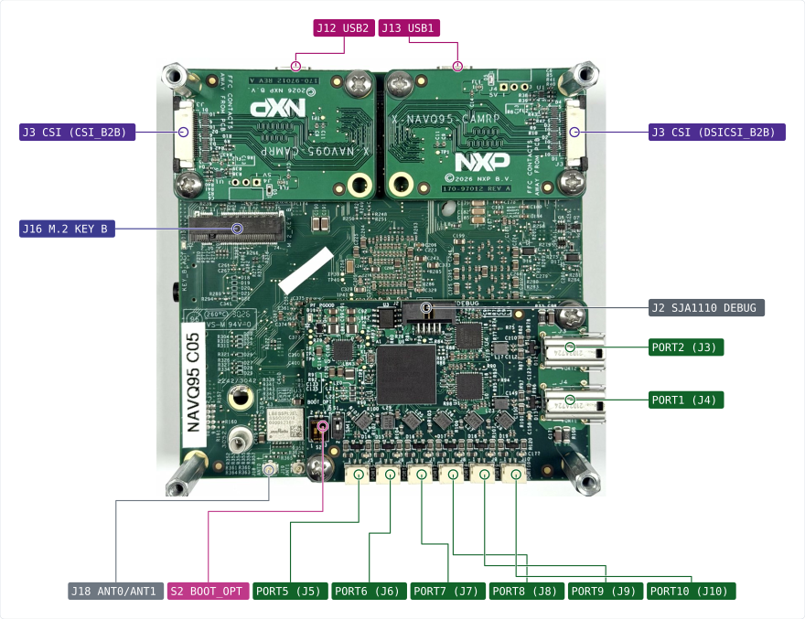
Boot Switch (SW2)¶
The boot mode is selected using DIP switch SW2 (BTMODE), a 4-position DIP switch on the top side of the board, located near the M.2_KEY_M PCIe connector (J1). Set the switches before powering on the board.
Important: When an ARA module is connected to the M.2_KEY_M PCIe connector (J1), it will physically cover SW2. Always set the desired boot mode before attaching the ARA module.
The BOOT_MODE[3:0] bits map to switches SW2[4:1]:
BOOT_MODE[3:0] |
SW2[1] |
SW2[2] |
SW2[3] |
SW2[4] |
Boot Device |
|---|---|---|---|---|---|
|
ON |
OFF |
OFF |
ON |
Serial Downloader via USB1 (J13) |
|
OFF |
ON |
OFF |
ON |
eMMC |
|
ON |
ON |
OFF |
ON |
SD Card |
|
OFF |
OFF |
ON |
ON |
Octal Flash (NOR) |

SW2 boot mode switch location on the MR-NavQ95 main board, near the J1 M.2_KEY_M PCIe connector.
Connector index¶
Ref |
Function |
Connector |
Details |
|---|---|---|---|
Main J1 M.2 KEY M |
M.2 Key M slot, PCIe x1 (NPU or NVMe SSD) |
M.2 Socket 3 Key M, 2242 / 2280 standoffs, 3.3 V up to 3.5 A |
|
Main J2 CONSOLE |
UART1 (Linux console) and UART2 (M7 console) header, DS-009 TELEM layout |
JST-GH 1x6 (SM06B-GHS-TB) |
|
Main J3 B2B |
Board-to-board expansion headers |
Board-to-board headers |
J3/J4 B2B_IO1/IO2 (2x25) for the IO board, J14/J15 B2B_CSI/DSICSI (2x20) for the camera boards, J17 B2B_ETH (2x25) for the T1 boards. Pin lists are on schematic page 25. |
Main J5 SIM |
SIM card holder for the Key B modem slot |
SIM card holder, 6 contacts + card-detect switch, bottom side |
|
Main J6 MICROSD |
microSD card slot (USDHC2) |
microSD push-push, bottom side |
USDHC2. The board can boot from it when the boot-mode switch selects SD. |
Main J7 DEBUG |
SWD / JTAG debug header (Arm Cortex 10-pin) |
2x5 1.27 mm (Samtec SHF-105-01-L-D-RA) |
|
Main J8 ENET1 |
Gigabit Ethernet with PTP |
RJ45 with magnetics (Abracon ARJM11D7) |
RTL8211 PHY on i.MX95 ENET1, supports IEEE 1588 PTP. |
Main J9 PWR_IN |
Power input 9-52 V (3S-12S battery) |
Molex Micro-Fit 3.0 2-pin (0430450222) |
|
Main J11 RTC_BAT |
RTC backup battery (rechargeable ML2020, RPi 5 compatible) |
JST-SH 1.0 mm 2-pin (SM02B-SRSS-TB), top entry |
|
Main J12 USB2 |
USB 2.0 Type-C host port |
USB Type-C receptacle, bottom side |
Host port. 5 V VBUS through an NX20P0477 load switch with over-current protection. |
Main J13 USB1 |
USB 3.0 Type-C, serial download / device port |
USB Type-C receptacle, bottom side |
Serial-download port of the i.MX95 boot ROM and the port the NavQ95 flasher uses. USB 3.0 and USB 2.0 are both connected. |
Main J16 M.2 KEY B |
M.2 Key B slot, PCIe x1 with SIM (cellular modem) |
M.2 Socket 2 Key B / B+M, 2242 / 3042 / 3052 standoffs, bottom side, 3.3 V up to 5 A |
|
Main J18 ANT0/ANT1 |
Wi-Fi 6 / Bluetooth antennas (LBES5PL2EL), ANT0 = J18, ANT1 = J19 |
2x U.FL |
ANT0 = J18, ANT1 = J19. LBES5PL2EL Wi-Fi 6, Bluetooth and 802.15.4. |
IO J1 CONSOLE |
USB-C console: CP2105 bridge, UART1 = Linux, UART2 = M7 |
USB Type-C receptacle (USB 2.0 device) |
|
IO J2 SPKR |
Stereo speaker output (WM8962B class-D, 2x 1 W) |
JST-PH 2.0 mm 1x4 |
|
IO J3 CAN3 |
CAN FD 3 (TJA1463) |
JST-GH 1x4, side entry |
|
IO J4 CAN2 |
CAN FD 2 (TJA1463) |
JST-GH 1x4, side entry |
|
IO J5 CAN1 |
CAN FD 1 (TJA1463) |
JST-GH 1x4, side entry |
|
IO J6 TELEM |
Telemetry UART7 with flow control |
JST-GH 1x6, top entry |
|
IO J7 I2C |
I2C6 peripheral connector |
JST-GH 1x4, top entry |
|
IO J8 GPS |
GPS: UART5, I2C6, safety switch, LED, buzzer |
JST-GH 1x10, side entry |
|
IO J9 PWM |
8x PWM / timer outputs (TPM3 to TPM6), also usable as FlexIO1 pins |
JST-GH 1x10, side entry |
|
IO J12 AUDIO |
3.5 mm headset jack, CTIA wiring (WM8962B headphone out + microphone in) |
3.5 mm 4-pole TRRS jack with insertion switch, board underside |
|
CAM J3 CSI |
MIPI CSI-2 camera, 4 data lanes, RPi camera compatible |
22-pin 0.5 mm FPC/FFC, contacts away from the PCB |
|
CAM J4 5V |
5 V header for a display (not fitted) |
1x3 2.54 mm right-angle header, not fitted |
|
T1S J2 DEBUG |
Debug header of the SJA1110 (Arm Cortex-M7 inside the switch) |
2x5 1.27 mm |
Not the i.MX95 debug port; that is J7 on the main board. |
T1S J3 PORT2 |
1000BASE-T1 port 2 |
Single-pair automotive connector |
TJA1120 PHY on SJA1110 SGMII port 2. |
T1S J4 PORT1 |
1000BASE-T1 port 1 |
Single-pair automotive connector |
TJA1120 PHY on SJA1110 SGMII port 1. |
T1S J5 PORT5 |
100BASE-T1 port 5 |
2-pin single-pair connector |
SJA1110 internal 100BASE-T1 PHY, switch port 5. |
T1S J6 PORT6 |
100BASE-T1 port 6 |
2-pin single-pair connector |
SJA1110 internal 100BASE-T1 PHY, switch port 6. |
T1S J7 PORT7 |
100BASE-T1 port 7 |
2-pin single-pair connector |
SJA1110 internal 100BASE-T1 PHY, switch port 7. |
T1S J8 PORT8 |
100BASE-T1 port 8 |
2-pin single-pair connector |
SJA1110 internal 100BASE-T1 PHY, switch port 8. |
T1S J9 PORT9 |
100BASE-T1 port 9 |
2-pin single-pair connector |
SJA1110 internal 100BASE-T1 PHY, switch port 9. |
T1S J10 PORT10 |
100BASE-T1 port 10 |
2-pin single-pair connector |
SJA1110 internal 100BASE-T1 PHY, switch port 10. |
Main board¶
Main J9 PWR_IN¶
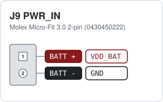
Pin 1 (BATT +) is the lower pin on the board. Input 9 V to 52 V, never more than 60 V. The board can draw 60 W between 9 V and 20 V, and 125 W between 20 V and 52 V. The input voltage is measured on ADC_IN0 (VIN / 64).
Main J2 CONSOLE¶
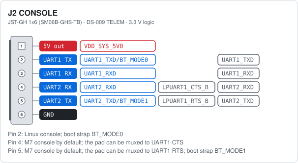
Pins 2 to 5 follow the DS-009 TELEM layout for UART1: 2 = TX, 3 = RX, 4 = CTS, 5 = RTS. By default pin 4 carries UART2 RX and pin 5 UART2 TX (the M7 console). The same pads can be muxed to UART1 CTS and RTS instead, which gives UART1 full DS-009 flow control on this header. UART1 TX and UART2 TX are also the boot-mode straps BT_MODE0 and BT_MODE1. The same two UARTs are also on the USB console port J10 of the IO board, see the figure there.
Note: UART1 TX and UART2 TX are boot straps. Keep them idle while the board resets, or it may boot from the wrong source.
Main J7 DEBUG¶
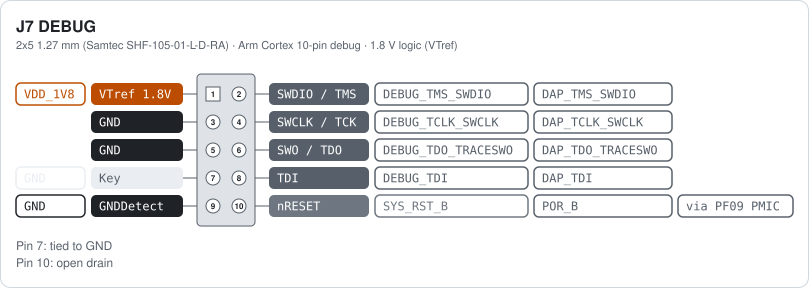
Standard Arm Cortex 10-pin layout (0.05 inch). Works with J-Link, PyOCD and similar probes. nRESET goes through a diode to SYS_RST_B, so the probe can only pull it low.
Note: VTref is 1.8 V. Use a debug probe that supports 1.8 V targets.
Main J1 M.2 KEY M¶
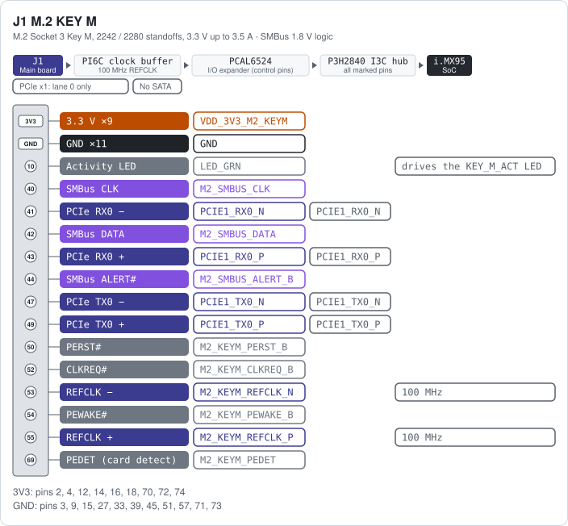
Only the pins below are connected. All other pins of the 75-pin socket are not used: PCIe lanes 1 to 3 (odd pins 5 to 37), SATA, DEVSLP, SUSCLK (pin 68, link resistor not fitted), MFG1/2 and the even pins 6 to 36. The 3.3 V comes through an NX20P5090 load switch that the I/O expander can switch off: 3.5 A continuous, 7 A peaks of 100 µs. PEDET has a pull-up on the always-on 3.3 V rail, so a card is detected even when the slot is switched off.
Note: PCIe x1 only, no SATA. An NVMe SSD or NPU module works; a SATA M.2 drive does not.
Main J16 M.2 KEY B¶
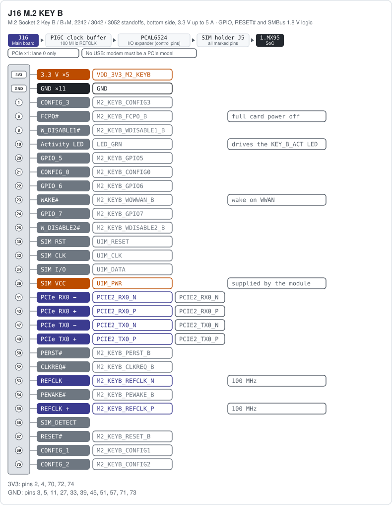
Made for a PCIe cellular modem. The USB 2.0 pins (7, 9) and the USB 3.0 / lane 1 pins (29 to 37) are not connected. SMBus (40, 42, 44), SUSCLK (68) and the Bluetooth coexistence lines COEX1/2 (64, 62, to the LBES5PL2EL) are routed, but their link resistors are not fitted. ANTCTL0 to 3, COEX3, DPR, DEVSLP, GPIO_3/4/8 and MFG1/2 are not connected. The UIM pins go to the SIM holder J5. The 3.3 V comes through an NX20P5090 load switch that the I/O expander can switch off: 5 A continuous, 6 A peaks of 100 µs.
Important: See the Using a Cellular Modem on MR-NAVQ95 application note for selection guidance and a bring-up example.
Main J5 SIM¶
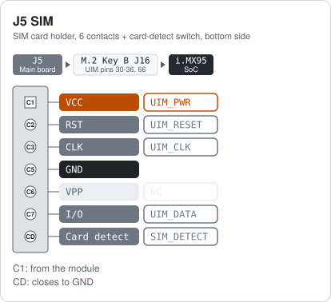
Connected directly to the UIM pins of the Key B slot. The modem supplies the SIM voltage on UIM_PWR. The card-detect switch pulls SIM_DETECT low when a card is inserted. All contacts have ESD protection.
Main J11 RTC_BAT¶
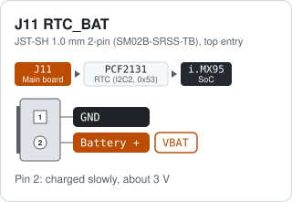
Keeps the PCF2131 real-time clock running while the board has no power. The battery is charged slowly from the 3.3 V rail. This suits a rechargeable ML2020 cell such as the RPi RTC Battery.
Warning: ONLY use a rechargeable ML2020 cell only. A CR2032 or other non-rechargeable cell must not be fitted as the board supplies a charging current.
Main other connectors¶
Ref |
Function |
Connector |
Notes |
|---|---|---|---|
J13 USB1 |
USB 3.0 Type-C, serial download / device port |
USB Type-C receptacle, bottom side |
Serial-download port of the i.MX95 boot ROM and the port the NavQ95 flasher uses. USB 3.0 and USB 2.0 are both connected. |
J12 USB2 |
USB 2.0 Type-C host port |
USB Type-C receptacle, bottom side |
Host port. 5 V VBUS through an NX20P0477 load switch with over-current protection. |
J8 ENET1 |
Gigabit Ethernet with PTP |
RJ45 with magnetics (Abracon ARJM11D7) |
RTL8211 PHY on i.MX95 ENET1, supports IEEE 1588 PTP. |
J6 MICROSD |
microSD card slot (USDHC2) |
microSD push-push, bottom side |
USDHC2. The board can boot from it when the boot-mode switch selects SD. |
J18 ANT0/ANT1 |
Wi-Fi 6 / Bluetooth antennas (LBES5PL2EL), ANT0 = J18, ANT1 = J19 |
2x U.FL |
ANT0 = J18, ANT1 = J19. LBES5PL2EL Wi-Fi 6, Bluetooth and 802.15.4. |
J3 B2B |
Board-to-board expansion headers |
Board-to-board headers |
J3/J4 B2B_IO1/IO2 (2x25) for the IO board, J14/J15 B2B_CSI/DSICSI (2x20) for the camera boards, J17 B2B_ETH (2x25) for the T1 boards. Pin lists are on schematic page 25. |
IO expansion board¶
IO J1 CONSOLE¶
A chip is used to present two serial ports on one USB-C connect at J10. On a Linux host they appear as ttyUSB0 (UART1, Linux console) and ttyUSB1 (UART2, M7 console). RX and TX LEDs for both UARTs sit next to the connector. The same two UART signals also go to the J2 header on the main board, see the figure below.
Note: Port 1 (ECI) is the Linux console, port 2 (SCI) is the M7 console. Do not let the host drive the TX lines while the board resets.
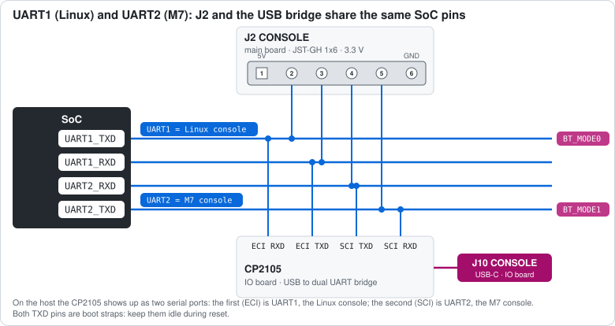
IO J6 TELEM¶
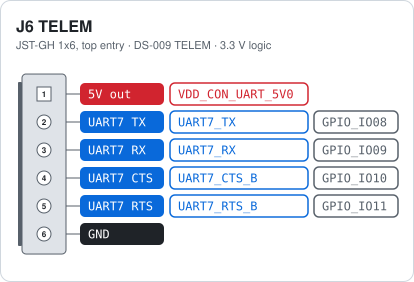
The 5 V output is filtered (VDD_CON_UART_5V0) and has ESD protection.
IO J8 GPS¶
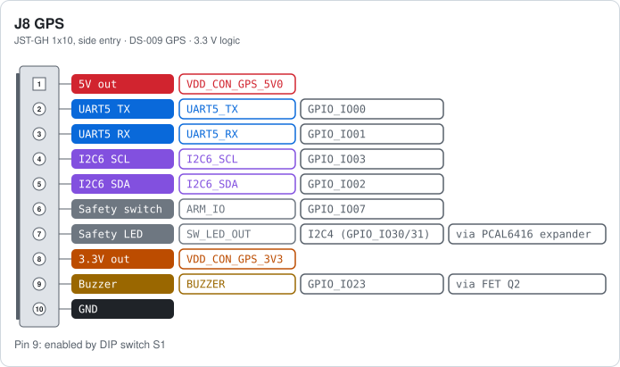
Standard DS-009 GPS and compass connector. The safety switch input (ARM_IO) is also wired to the ARM button SW1 on the board, and the LED output drives the LED in the switch. The buzzer pin is switched by an N-FET (AO3400A) driven from TPM6_CH1. A buzzer on the board is connected in parallel. DIP switch S1 sits between TPM6_CH1 and the FET: with S1 OFF both buzzers are disconnected and TPM6_CH1 is free for PWM8 on the PWM header.
IO J7 I2C¶
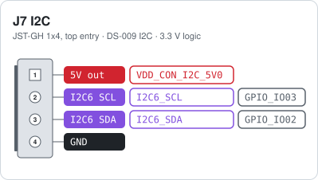
Same I2C6 bus as the GPS connector. The board has 2.2 kΩ pull-ups to 3.3 V.
IO J9 PWM¶
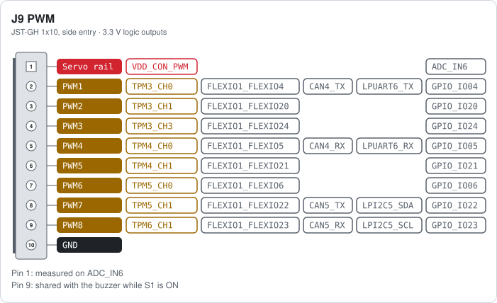
Pin 1 (VDD_CON_PWM) is the servo power rail. It is linked to the board 5 V through R60 (0 Ω, not fitted) and measured on ADC_IN6 (VDD_CON_PWM / 8, up to 12 V). The outputs are 3.3 V logic with ESD protection. PWM8 (pin 9) also drives the buzzer. Every output pad can also be muxed to FlexIO1, for example for DShot or other custom timing protocols. Pins 2 and 5 can also be CAN4 or LPUART6 (TX and RX), pins 8 and 9 CAN5 or LPI2C5 (no pull-ups on the board). CAN4 and CAN5 need an external transceiver.
Warning: Do not put more than 5 V on the servo rail (pin 1) while R60 is fitted.
Tip: Need all eight PWM outputs? Switch DIP switch S1 (BUZZER) off. It frees PWM8 from the buzzer.
IO J5 CAN1¶
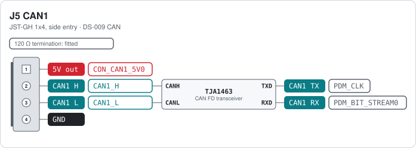
TJA1463 CAN FD transceiver with 5 V supply. The 120 Ω split termination is on the board, so each CAN port is a bus end. CANH and CANL together form the differential bus. TXD and RXD are the logic pins of the transceiver and go to the FlexCAN pads of the i.MX95. The transceiver enable and standby pins are controlled through the PCAL6524 I/O expander.
IO J4 CAN2¶
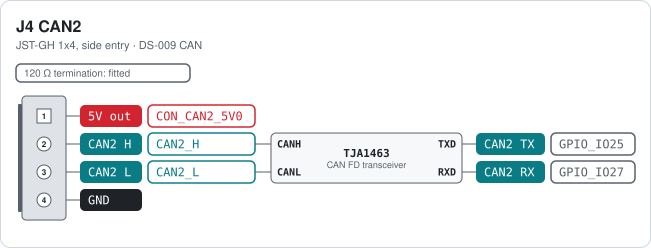
Same circuit as CAN1, with the 120 Ω termination.
IO J3 CAN3¶
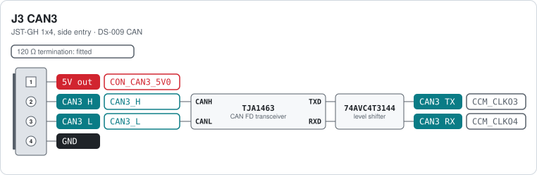
Same circuit as CAN1, with the 120 Ω termination.
IO J12 AUDIO¶
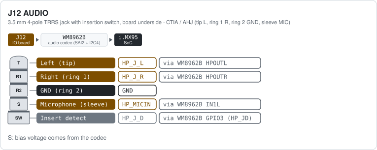
Plug contacts listed from tip to sleeve. The switch in the jack drives HP_JD: high with a plug inserted, low without (100 kΩ pull-up to 1.8 V). The codec uses it to detect the plug. The headphone ground reference is the HP_FB sense line of the codec.
Note: CTIA wiring only. OMTP headsets (microphone and ground swapped) do not work.
IO J2 SPKR¶
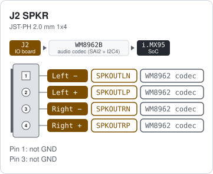
Bridge-tied class-D outputs of the WM8962B codec. The 4-pin JST-PH plug of the Adafruit 1669 Stereo Enclosed Speaker Set (2x 3 W, 4 Ω) fits directly. J25 next to it is the headset jack; the board also has two PDM microphones.
Caution: No GND on this connector. Each speaker goes between its − and + pin. Never connect a speaker pin to ground.
Camera expansion board¶
CAM J3 CSI¶
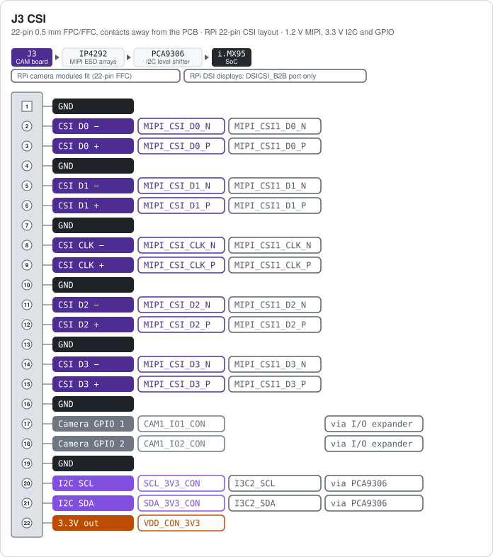
Pin-compatible with the 22-pin RPi camera connector (22-pin 0.5 mm same-side FFC). Two identical camera boards can be fitted. In the bottom view, the left one sits on CSI_B2B and goes to the i.MX95 MIPI_CSI1 port; the right one sits on DSICSI_B2B and goes to the second port, which is shared between DSI and CSI. The camera I2C is the i.MX95 I3C2 bus, shifted from 1.8 V to 3.3 V by a PCA9306. The two GPIO pins come from the I/O expander on the main board; the exact expander pins and the pad names of the second port were not traced. Whether a camera module works depends on the software image, not on the connector. J4 next to it is a 3-pin 5 V header for a display, not fitted.
Tip: RPi camera modules fit directly with a standard 22-pin FFC. For an RPi DSI display use the camera board on the DSICSI_B2B port; the CSI_B2B port cannot drive a display.
Note: RPICAM3 is one of several cameras supported. These are readily available. NXP has P/N MR-RPICAM3 which may be purchased as an accessory.
CAM J4 5V¶
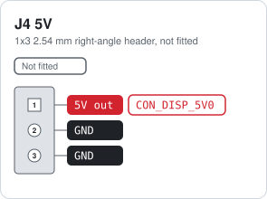
Filtered 5 V from the system rail with ESD protection, meant for a DSI display on the DSICSI_B2B camera board. The silkscreen marks pin 1 as 5V.
T1 Ethernet switch board¶
The MR-NAVQ95E-T1S board is an NXP SJA1110 automotive Ethernet switch. It is connected to the main board through B2B_ETH on SGMII port 4 of the switch (the host port). Ports 1 and 2 are 1000BASE-T1 through two TJA1120 PHYs on SGMII ports 1 and 2. Ports 5 to 10 are 100BASE-T1 on the switch’s own PHYs. SGMII port 3 is not used. The port numbers on the bottom view are the switch port numbers, which also match the silkscreen.
T1S ports and headers¶
Ref |
Function |
Connector |
Notes |
|---|---|---|---|
J4 PORT1 |
1000BASE-T1 port 1 |
Single-pair automotive connector |
TJA1120 PHY on SJA1110 SGMII port 1. |
J3 PORT2 |
1000BASE-T1 port 2 |
Single-pair automotive connector |
TJA1120 PHY on SJA1110 SGMII port 2. |
J5 PORT5 |
100BASE-T1 port 5 |
2-pin single-pair connector |
SJA1110 internal 100BASE-T1 PHY, switch port 5. |
J6 PORT6 |
100BASE-T1 port 6 |
2-pin single-pair connector |
SJA1110 internal 100BASE-T1 PHY, switch port 6. |
J7 PORT7 |
100BASE-T1 port 7 |
2-pin single-pair connector |
SJA1110 internal 100BASE-T1 PHY, switch port 7. |
J8 PORT8 |
100BASE-T1 port 8 |
2-pin single-pair connector |
SJA1110 internal 100BASE-T1 PHY, switch port 8. |
J9 PORT9 |
100BASE-T1 port 9 |
2-pin single-pair connector |
SJA1110 internal 100BASE-T1 PHY, switch port 9. |
J10 PORT10 |
100BASE-T1 port 10 |
2-pin single-pair connector |
SJA1110 internal 100BASE-T1 PHY, switch port 10. |
J2 DEBUG |
Debug header of the SJA1110 (Arm Cortex-M7 inside the switch) |
2x5 1.27 mm |
Not the i.MX95 debug port; that is J7 on the main board. |
Notes¶
The connectors marked DS-009 on their card (TELEM, GPS, I2C, CAN and the J2 console header) follow the Dronecode DS-009 connector standard, so standard cables fit. The other JST-GH connectors, such as the PWM header, have their own pin order.
Input 9 V to 52 V (never more than 60 V), 3S to 12S batteries. 60 W between 9 V and 20 V, 125 W between 20 V and 52 V.
The 5 V pin of every JST-GH connector is a filtered, ESD-protected output of the 5 V system rail (
VDD_CON_*_5V0nets).The servo rail of the PWM connector (
VDD_CON_PWM) is separated from the 5 V rail by R60, a 0 Ω link that is not fitted. This allows an external servo supply. The rail is measured on ADC_IN6 and must stay below 12 V.VIN, 5 V and 3.3 V are measured on ADC_IN0, ADC_IN1 and ADC_IN2.
Warning: Never feed power into a 5 V pin of a JST-GH connector. They are outputs. Power the board through J9 PWR_IN only.
Cheat sheet¶
All connector cards on one double-sided A4 landscape sheet: cheat sheet PDF.